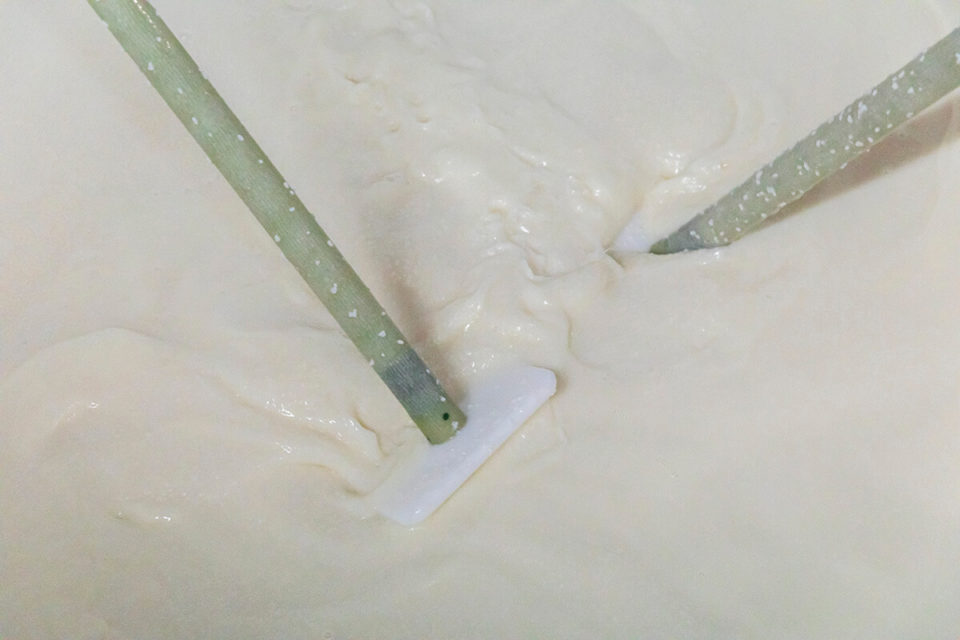
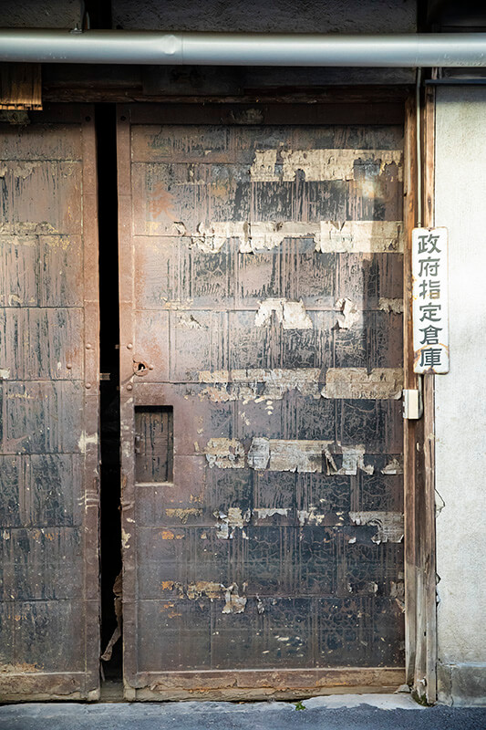
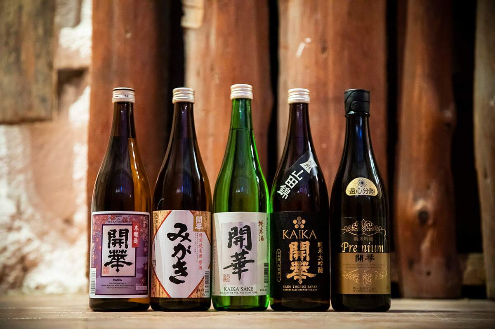
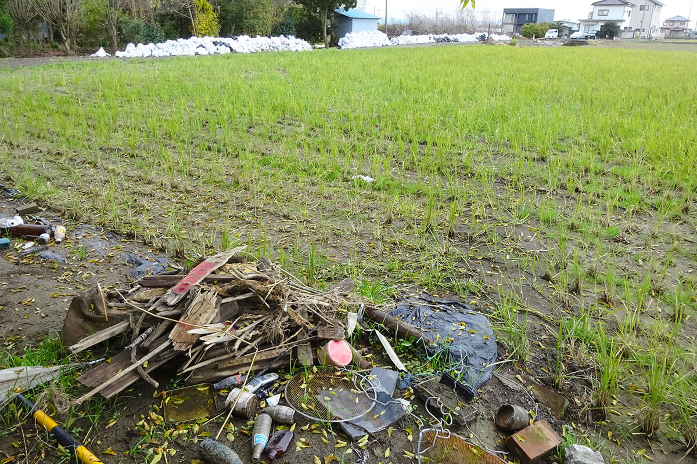
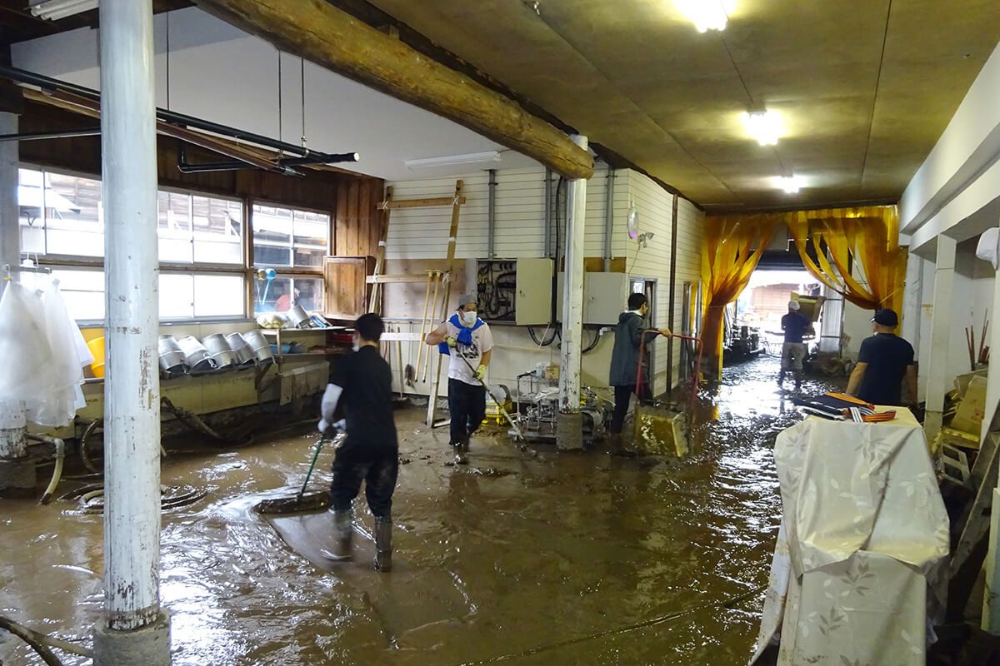

Префектура Тотиги · Сано · сакэ
«Дайити сюдзо» в Сано: старейшая сакэварня Тотиги, которая пережила наводнение 2019 года

Сакэварня «Дайити сюдзо» работает в городе Сано с 1673 года, и это старейшая сакэварня префектуры Тотиги. В 2019 году её затопил тайфун, а уже в декабре того же года здесь снова варили сакэ.
Рис
Сакэварня, которая начиналась как ферма
На старой деревянной двери, местами облупленной до голых досок, висит табличка «Склад, назначенный правительством». Пока гость разглядывает непривычную надпись, двенадцатый глава сакэварни объясняет: «Сейчас здесь кладовка, а раньше мы хранили тут собранный рисовый урожай для сакэ». Оказывается, и в 2020 году «Дайити сюдзо» закупала рис у фермеров и оставалась единственной сакэварней в стране с правительственной лицензией на сбор риса и пшеницы.

Сано лежит на юго-западе префектуры Тотиги, у северного края равнины Канто. Сакэ здесь варят с начала эпохи Эдо, и всё это время сакэварня была тесно связана с рисом. Многие сакэварни зимой варят сакэ, а летом выращивают рис, и этим никого не удивишь. Но «Дайити сюдзо» с самого начала была крестьянским хозяйством и три с половиной века шла рядом с рисовым полем. На собственных полях работники сакэварни сами делают всё, от посадки рассады до уборки урожая.
«Когда сам растишь рис, понимаешь, как тяжело достаётся фермеру. Начинаешь бережнее с ним обращаться, и сакэ само собой получается аккуратнее. Все мастера знают, что из этого риса будет сакэ, и это хорошо сказывается на вкусе»
глава сакэварни
Этот рис идёт на сакэ Kaika. Для него берут мягкую чистую воду Сано: она собирается в лесистых горах на краю равнины Канто, проходит через древние породы и по реке Акияма первой попадает в город. У Kaika тонкий цветочный аромат и мягкий вкус, который раскрывается во рту.

Тайфун
Вода по колено и 600 добровольцев
Тайфун № 19 в 2019 году ударил прямо по префектуре Тотиги. Ночью прорвало дамбу на реке Акияма, и мутная вода залила весь квартал Тадзима, где стоит сакэварня. Глава сакэварни приехал на рассвете.
«Я увидел, что вся территория под водой, и просто онемел»
глава сакэварни

Внутри вода поднималась до 80 см. Пострадали холодильники, комната для выращивания кодзи, рисомоечная машина, пастеризатор и другое оборудование. Зимний сезон варки сакэ только начинался, и всё остановилось. «Я не знал, сможем ли мы вообще продолжать», вспоминает глава сакэварни.

Подняться помогли добровольцы. Продавцы сакэ и оптовики, соседи и студенты, всего около 600 человек, примерно 40 дней выгребали ил, и в начале декабря сакэварня снова начала варить сакэ.
Так быстро это получилось потому, что Kaika давно стал своим для местных. Сакэ «Дайити сюдзо» вывозят в Гонконг, Тайвань, Сингапур, Северную Америку и Европу, но 80 процентов всего, что выпускает сакэварня, остаётся в Тотиги. В год здесь делают около 144 000 литров, это примерно 80 000 больших бутылок по 1,8 литра.
«Мы так быстро снова взялись за сакэ только благодаря поддержке и добрым словам. И дальше главным для нас останется вкус, которого ждут люди здесь, в Сано»
глава сакэварни
Визит
Магазин и экскурсия
При сакэварне работают магазин и галерея. На экскурсии работники показывают, как делают сакэ, а в конце дают попробовать здешнее сакэ. Экскурсии проводят только по предварительной записи по телефону. Зимой в цех, где идёт варка, не пускают.
«Дайити сюдзо»
- Адрес
- префектура Тотиги, Сано, Тадзима-тё, 488
- Телефон
- +81 283-22-0001
- Часы работы
- магазин 10:00–16:30, перерыв 12:00–13:00; экскурсии 13:00–15:30
- Выходные
- магазин закрыт 1 января и утром 31 декабря
- Цены / Вход
- экскурсия 500 иен с человека, по записи
- Сайт
- sakekaika.co.jp
Фото: Акио Накамура.